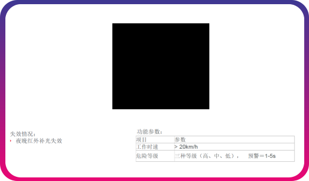

回到首页
本质安全型防爆车载监管仪
产品介绍
本产品是全国首款满足现有车载终端功能的基础上，具有防爆特征的，本质安全型防爆车载监管仪。本产品可安 装在危险化学品运输车辆，运用高精度北斗技术，用于监管危险化学品装卸、运输全过程行为，对驾驶员、押运员采 用人脸识别人证合一认证技术实现驾驶员、押运员身份识别，防止中7途换人、疲劳驾驶等违规操作，同时配有语音 对讲与视频监控模块，用于异常报警信息提醒等。应用范围(两客一危车辆)。
产品功能
交通部标基本流程
实时北斗定位抓拍图片功能
汽车行驶记录
区域超速报警终端语音提醒功能
中心语音监听
实时音频、视频、图像同步传输功能
远程升级设备、设置参数功能
主机故障报警监控功能
超速与紧急报警中心提示功能
北斗高精度定位
定位天线断开和短路报警功能
TTS文字转语音播报功能
熄火延时录像保存功能
车辆故障诊断
语音对讲功能
DSM疲劳驾驶监测功能

主动安全防御（ADAS）
成功案例
为了加强危化品装卸运输全过程安全管理，根据淄博市政府201 7年53号会议纪要确定建设淄博市危化品装卸 运输监管平台，要求重点解决包括危化品运输介质不符、驾驶员押运员身份认证、驾驶员中途换人、装卸过程安全管 理等问题。淄博市危险化学品蓑卸运输监管平台，利用危化品装卸运辕安全监管仪，对骂驶员及押运员身份，进行上 车刷eid卡验证利用车载elD屏进行危化品电子运单、出车前检查等操作；装卸环节通过电子围栏验证车辆营运范围信 息；同时，在运输环节利用北斗高精度定位，进行全过程监管；利用人匾识别活体